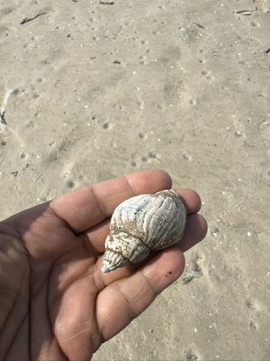

Excursion digicom 2025
(The Natrue of Code)
These are some observations from the excursion of the basics class at Univiersity of Art Braunschweig Germany. We went to the North Sea and explored a little island called Amrum. Our goal was to observe natural patterns und systems and recreate these natural algorithm in code. Inspired by the book “The Nature of Code” by Daniel Shiffman.
The Clam
The patterns of the clam can be usesd to determine the age of a shell. The more rings the shell has, the older it is.
source code for clam.js
Seashell

The pattern of the shell is a logarithmic spiral. The spiral can be described by the following formula:
r = a * e^(b * theta)
Where:
- r is the distance from the center of the spiral
- a is the initial distance from the center
- b is the growth rate of the spiral
- theta is the angle of the spiral
- e is the base of the natural logarithm
- The spiral is drawn in polar coordinates, which means that the angle and distance from the center are used to draw the spiral.
source code for seashell.js
Abstraction
What if we use this formula not to draw a sprial but select colors on a color wheel?
source code for seashell-colors.js
Branching
The following examples show different branching patterns.
source code for branching.js
Above we use a recursive algorithm to draw a tree. The function calls itself to draw the branches. It has no “memory” of the previous branches.
source code for branching-substrate.js
Here we use a algorithm inspired by Jer Thorp’s “Branching Substrate” to draw a tree. Our tree consists of a list of branches. We have several parameters to control the growth of the tree. How many generations can a branch have? Does it grow upwards or downwards? How long can a branch be?
Icecream
the consum of icecream can be described by the following formula:
consumption = a * e^(b * temperature)
Where:
-
consumption is the amount of icecream consumed
-
a (initial amount) acts as a scaling factor that determines the baseline consumption when temperature is 0
-
b (growth rate) controls how rapidly consumption increases with temperature:
- If b > 0: consumption increases exponentially as temperature rises
- If b < 0: consumption decreases exponentially as temperature rises
- Larger absolute values of b create steeper curves This is an exponential growth/decay model where:
-
If temperatures are positive and b > 0, consumption grows increasingly faster as temperature rises
-
The curve is never linear - small temperature changes at higher temperatures cause larger changes in consumption than the same changes at lower temperatures
This model makes intuitive sense for ice cream if b > 0, as people typically consume more ice cream in warmer weather, with consumption accelerating rapidly on very hot days. This
source code for icecream.js
source code for glitch.js